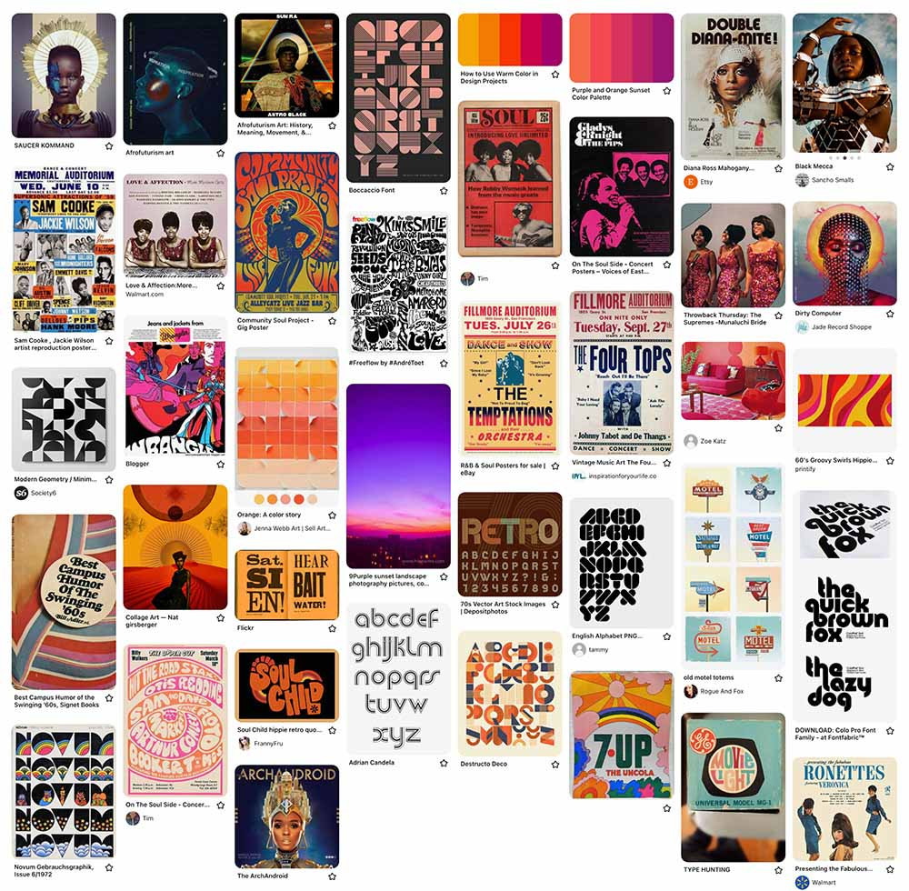
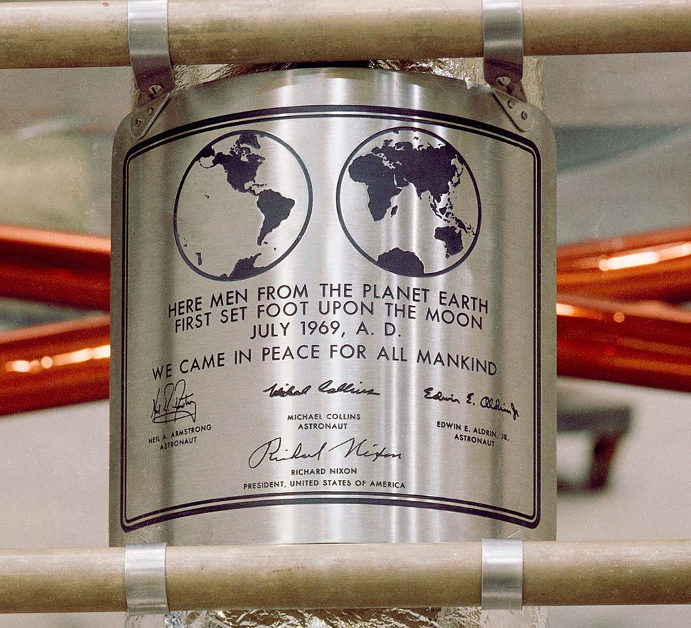
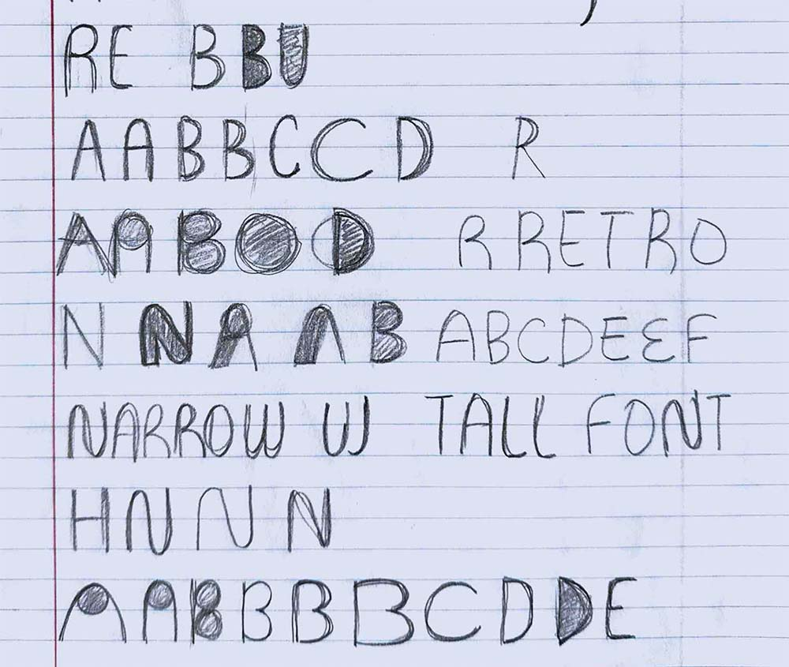
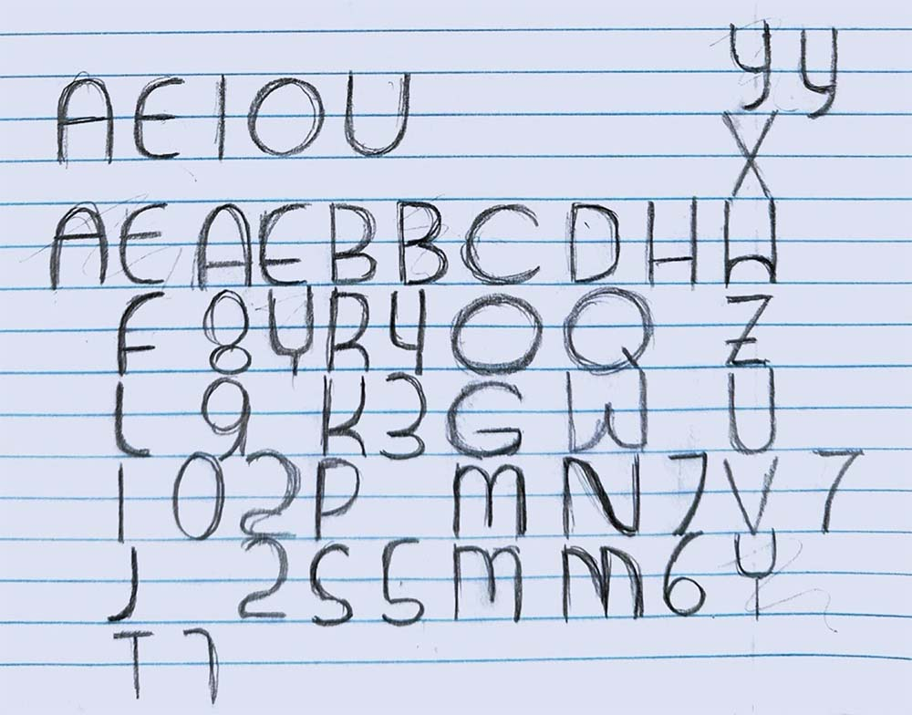
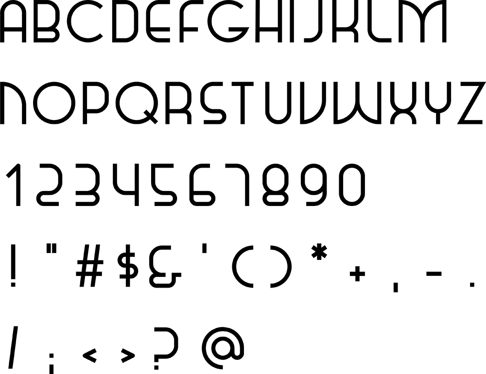
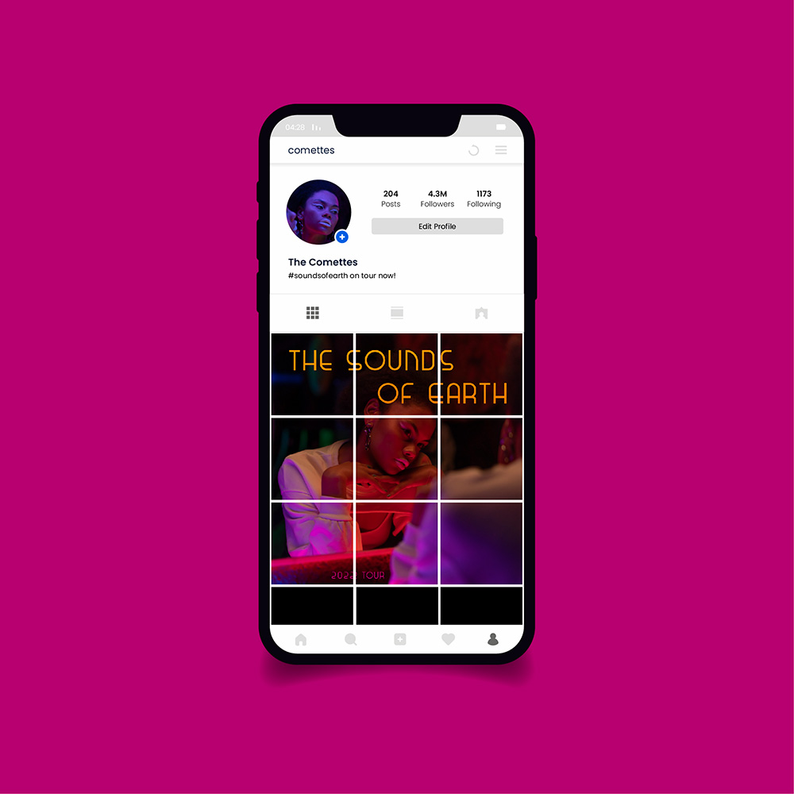
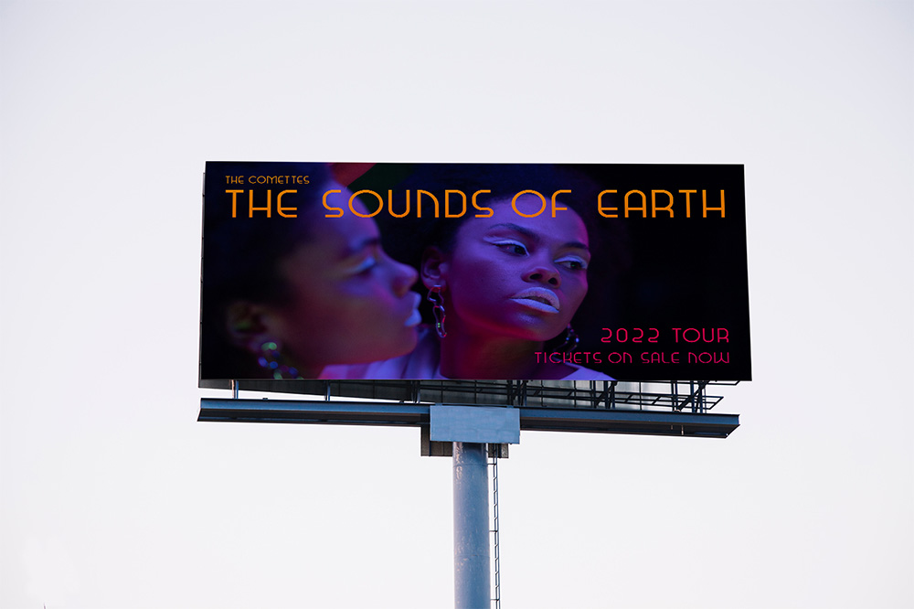
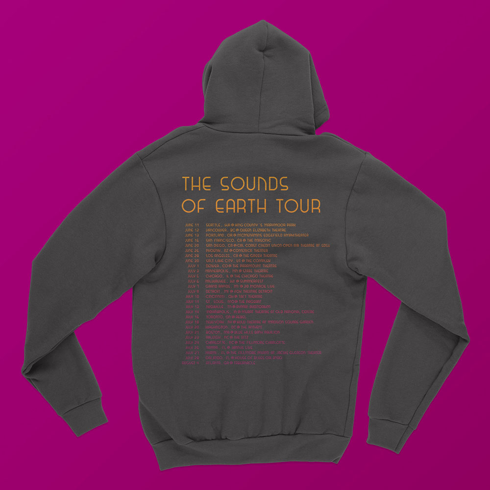

Overview
About This Project
This was an individual project for my Typography and Layout class at CSUSB. Over the course of four weeks, I created a concept, designed a typeface based on research, and made a digital font.
The Assignment
In this project, we were tasked with designing an expressive typeface for a fictional artist.
My Deliverable
I created Comette, a geometric sans-serif typeface for display. Inspired by the Motown era, Paul Renner's Futura, and the Apollo 11 Moon landing, Comette embodies a retrofuturistic look.
Ideation
Imagining the Artist
I started this project by imagining my artist. I wanted the retro feel of a Motown group with an afrofuturistic direction like Janelle Monáe. I created a mood board to gather all of my inspiration in one place.
My mood board for The Comettes.
I created The Comettes, named for the celestial body in the fashion of Motown groups like The Ronettes and The Supremes.
Research
Retrofuturism Through Type
My retrofuturistic vision for The Comettes required a balance of old and new in my typeface design.
After researching the history of sans-serif typefaces, Futura became a major inspiration for my typeface. Designed by Paul Renner in 1927, today it can be considered a past vision of a modern future.
Futura has also come to be associated with space and the future. In 1968, it was featured prominently in the film 2001: A Space Odyssey— another past imagining of the future, by today's standards. And, a year later, Futura really made it to outer space. When Apollo 11 landed the first humans on the Moon, a commemorative plaque— set in Futura— was left behind.
The Apollo 11 plaque. Photo: NASA.
I discovered that Futura was actually a favorite of NASA for a time. From about 1961-1976, Futura was used on all of their materials [1]. NASA will always have a futuristic feel, but the era defined by Futura is situated firmly in the past.
Design
Sketching Letterforms
Inspired by Futura and its place on the Moon, I decided to design a geometric sans-serif typeface.
I started by sketching geometric letterforms.
After some feedback, I opted for a low x-height and I worked on adapting my letteforms to create additional letters.
Increasing Fidelity
Next, I created vectors for each letter in Illustrator. I built each letter on a grid, using straight lines and circle segments for curves.
Creating a Font
I imported my vectors into BirdFont to create a working font file. Then, I used Comette to create mockups of concert tour ephemera for The Comettes.
Final Design
Instagram tour announcement.
Billboard ad.
Concert tour hoodie.
Reflection
What I Learned
The best part of this project was researching typographical history. Learning about Futura and NASA and the Moon was really interesting. It's amazing how much history a typeface can have and how that history informs our visual language and interpretation today— whether we are aware of it or not.
Next Steps
If I were to revisit this project, I would start by revising a few of my symbols. Looking back, I can see that my apostrophes and quotations aren't distinguishable from hatch marks. Updating these symbols would also influence the design of my comma and semicolon. From there, I would want to expand this typeface to include lowercase letters and additional symbols.
References
- Thomas, D., & Lupton, E. (2017). Never use Futura. Princeton architectural press.